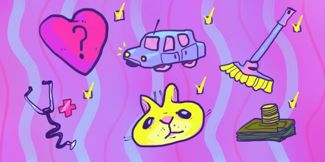

5 вещей, которые обязательно нужно делать раз в год
Позаботьтесь о здоровье, доме, финансах и других сферах жизни.
1. Проверять здоровье
Сходите к терапевту, даже если у вас ничего не болит. Он оценит ваше состояние и даст рекомендации в соответствии с возрастом, наследственностью и образом жизни.
Возможно, направит на обследования, если заподозрит какую‑то болезнь на ранней стадии. А вот к стоматологу наведывайтесь чаще — раз в полгода.
Это нужно, чтобы вовремя залечить мелкие дырочки и сделать профессиональную чистку зубов.
Также самостоятельно проверяйте свою физическую форму. Сделайте несколько упражнений и оцените свои результаты. Параметры у каждого могут быть собственные: например, кому‑то важнее скорость, а кому‑то — гибкость. В любом случае это хороший способ понять, над чем нужно работать.
2. Возить питомца к ветеринару
Пожалуй, все хозяева домашних животных мечтают, чтобы те могли разговаривать. В том числе чтобы сообщать о своём самочувствии.
Пока люди не научились переводить мяуканье, лай и щебет на человеческий язык, лучше полагаться на превентивные меры. Специалисты советуют возить питомца на осмотр
к ветеринару раз в год, а если кошке или собаке больше семи лет, то раз в полгода. Врач сделает анализы и необходимые прививки — это поможет вовремя обнаружить проблемы
или вовсе предотвратить их.
3. Анализировать свои финансы
За финансовым здоровьем тоже нужно следить. Так что раз в году оценивайте своё денежное положение и ставьте новые цели, если достигли старых. Смотрите, как изменились условия в банках. Возможно, вы найдёте более выгодные предложения по картам, вкладам и другим услугам. Заодно проверьте свою кредитную историю. Это пригодится, если в ближайшем будущем вы планируете брать кредит или ипотеку.
4. Делать генеральную уборку
Разберите накопившиеся вещи и избавьтесь от того, что стало ненужным. Постепенно пройдитесь по всем шкафам и полкам: с одеждой, посудой, книгами, продуктами. Не забудьте заглянуть в ящики, куда обычно складываете всякие мелочи: в них наверняка найдётся что‑то, от чего пора избавиться. Отодвиньте холодильник, плиту и стиральную машину от стен и тщательно вымойте за ними — обычно мы не уделяем внимания этим местам и там накапливается много пыли и мусора. Подумайте, где ещё вы редко убираетесь, и очистите эти места.
5. Наводить порядок в цифровой жизни
Разберите почту, документы и фотографии, удалите ненужные приложения, фильмы и музыку. Потом пройдитесь по своим соцсетям и отпишитесь от тех, с кем перестали общаться или кого вам просто больше неинтересно читать. Заодно проверьте свои настройки конфиденциальности и права разных приложений.